内置节点
在 ComfyUI 中，节点是代表工作流中 特定操作 或 功能 的基本构建块, 是一个单独处理单元。将节点连接在一起以创建复杂的图像生成工作流。
从本章开始, 需要操作节点和创建工作流, 文后附有
基本操作附录和快捷键附录, 了解它们将是非常有用的. 操作中反复翻看将大大提升效率.
每个节点在 ComfyUI 的界面中通常是一个带有名称、输入、输出和参数控件的框
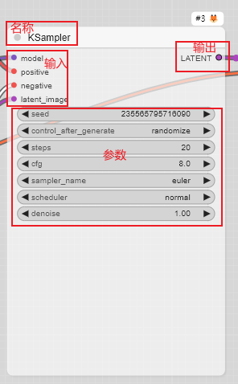
节点通常包含:
-
Inputs 输入. 输入是节点接收数据的连接点。每个输入都有其接受的特定数据类型，确保连接节点之间的兼容性。
-
Outputs 输出. 输出是将数据发送到其他节点的连接点。与输入一样，输出也定义了数据类型，决定了它们传递的信息类型。
-
Parameters 参数. 参数是控制节点行为的设置。这些可以包括数值、文本字符串或预定义选项的选择。
-
Internal Logic 内部逻辑. 这是节点的核心功能，由其背后的代码定义。它确定节点如何处理其输入、使用其参数并生成其输出。
一个简单完整的工作流
下面我们正式开始内置节点介绍. 先将一个完整的工作流组成介绍完, 再依次按分类介绍每个节点:
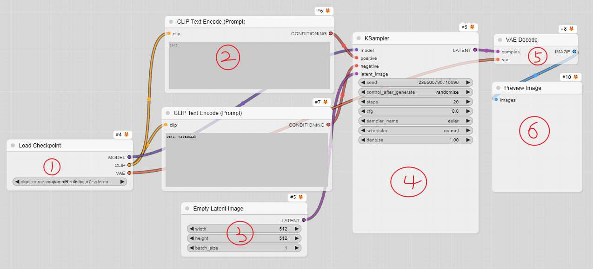
1, Load Checkpoint: 这个节点任务是从文件夹加载模型, 而且必须是包含 基础模型, CLIP 和 VAE 的模型 (具体见上一章基本概念), 然后分别输出.
2, CLIP Text Encode (Prompt): CLIP 文本编码节点, 是通过输入的 CLIP 模型, 将输入的 自然语言提示词 编码为潜空间向量输出, 用来引导图像生成.
3, Empty Latent Image: 空的潜空间图像, 该节点的作用就是创建空的潜空间图像, 通过参数指定宽, 高 和数量, 然后输出.
4, KSampler: 采样器节点, 该节点任务是 输入模型 按照输入的各种条件, 设置的各种参数去噪, 执行图像生成, 然后输出 (输出的仍然是潜空间图像). 拟人化理解就是 AI 在潜空间中按照人的指令在画画. 各种参数详解见上一章 基本概念.
5, VAE Decode: VAE 解码, 该节点任务是输入的 VAE 模型, 将 AI 画好的潜空间画作, 映射为现实图像输出.
6, Preview Image: 图像预览节点, 将最后输出的图像打印到屏幕上供你欣赏.
这就是一个完整的工作流, 它由一个个各司其职的节点组成, 协调完成创作大业. 工作流执行过程需要注意几点 (重要):
-
整个生成过程是一环扣一环的, 哪个节点出错, 它后面的节点就不会执行.
-
执行过一次之后, 下一次执行只运行有改动的节点, 以及依赖于它的节点. 例如你执行一次之后, 如果什么也没动, 连种子也固定, 在点击执行它不理你.
-
生成的图像, 或导出的工作流, 你直接加载或拖到窗口中, 会加载完整的工作流, 包括种子, 也就是可以将上次生成的图像完全复现出来 (注意固定种子).
-
你可以使用 () (英文括号) 来更改单词或短语的权重，例如：(beautiful girl：1.2) 或 (dog：0.8). () 的默认权重值为 1.1. 要在实际提示词中使用 () 字符，要转义它们，比如你要在图中生成
(), 就要\(\)这样. -
你可以使用
{day|night}这样的语法, 将提示词变成动态提示词, 这样，每次执行生成, 会从{}中,|符号隔开的单词或短语中随机选一个, 要在实际提示词中使用{}字符，请转义它们，例如：\{\}. -
提示词还支持 C 语言风格的注释, 注释的提示词不会生效. 像这样:
// comment或/* comment */ -
要使用 embeddings 模型，请将它们放在
models/embeddings目录中，并在提示词中注明 (您可以省略 .pt 扩展名):embedding:embedding_filename.pt
内置节点太多, 需要很多章节才能讲完, 下一章开始正式介绍每个内置节点.
基本操作附录
加载节点
加载节点有多种方式.
- 鼠标右击画布窗口的空白处, 可以按下图选择节点, 将选择的节点加载出来:
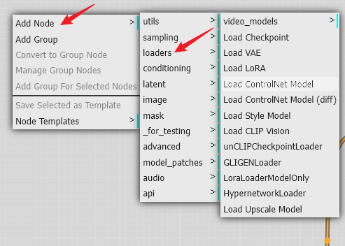
除了, Add Node, 其他选项介绍:
-
Add Group: 新建一个分组框 (这个操作麻烦, 不如选中要分组的节点, Ctrl + g 直接分为一个组)
-
Convert to Group Node: 选中多个节点, 可以用这个选项将多个节点合并为一个组节点 (新功能)
-
Manage Group Nodes: 管理组节点
-
Add Group For Selected Nodes: 将选中的多个节点分为一个组 (Ctrl + g)
-
Save Selected as Template: 保存选中的节点作为模板
-
Node Templates: 节点模板管理, 可以导入/导出节点模板
- 鼠标双击空白处, 弹出节点搜索框, 从搜索框中搜索节点加载 (鼠标移动到搜索出来的节点名上, 会弹出预览):
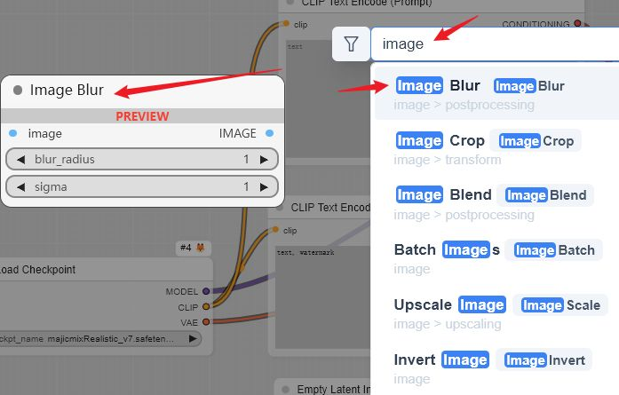
- 鼠标点击节点输出点, 按住拖动, 将拉出一条线, 放开线, 弹出的对话框也可加载节点, 如果匹配, 则直接与拖出的线相连:
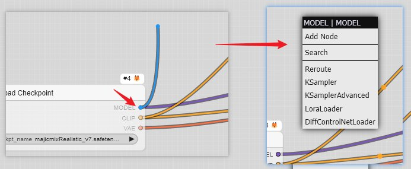
- 直接打开节点库, 搜索或选择:
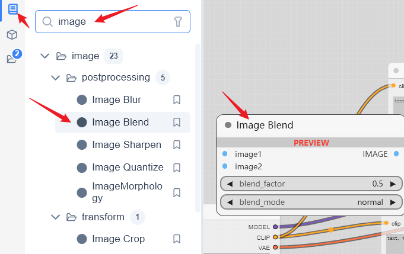
连接节点
节点加载出来, 按照上一章介绍的四个基本板块(加载模型, 输入/预处理/设置参数, 执行生成, 输出), 连接成一个完整工作流. 从输出点拖动线, 会自动高亮匹配的输入点并连接.
并不是节点的所有输入/输出都需要连接, 有的节点的输入/输出项是可选的, 可以不用输入, 这种情况遇到再说.
加载模型
模型统一放到 ComfyUI\models 下, 对应的文件夹中, 自动下载的模型会自动存放, 手动下载的根据模型分类手动存放 (一般模型发布者会说明放到什么位置):
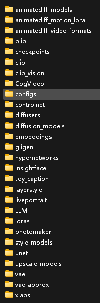
如果模型的位置放对了, 点击模型加载器节点选择, 将弹出可选模型:
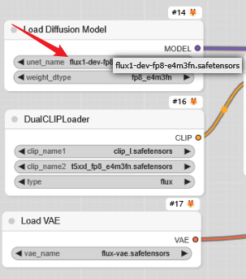
输入提示词
提示词输入, 一般在 CLIP 文本编码器节点输入, 还有其他输入方式, 将在相应的节点介绍.
参数设置
各节点有各节点的参数, 根据自己的需要, 计算机的配置 (显存), 模型参数要求等设置相应的参数, 例如前面介绍过的采样器节点. 具体细节到相应节点介绍.
节点设置
鼠标放到节点上右击, 将弹出节点设置对话框, 基本所有节点设置都差不多, 不同的节点可能略有不同:
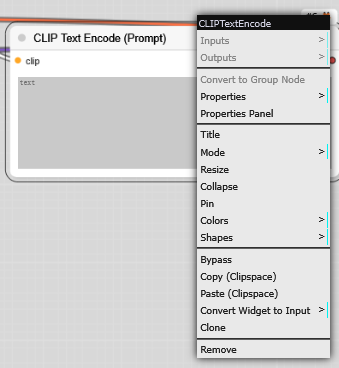
- Inputs
- Outputs
- Convert to Group Node 将选中节的多个节点转换为一个组节点
- Properties 设置节点的 S&R 名称(节点太多, 可能有共用同一个名称, 通过这里可改唯一名称)
- Properties Panel 设置节点以下参数:
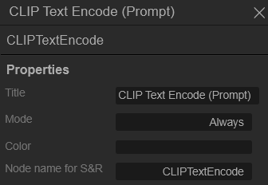
- Title 修改节点标题
- Mode 选择节点模式:
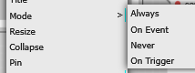
Always: 节点被改变或输入被改变时执行
Never: 禁用节点
On Evert/On Trigger
- Resize: 重置节点框大小
- Collapse: 折叠节点
- Pin: 在窗口画布中固定节点的位置
- Colors: 设置节点的颜色
- Shapes: 选择节点边框样式
- Bypass: 绕过节点(不执行而继续执行后面的)
- Copy (Clipspace): 复制 Clipspace, 目前只对有图像的节点有效
复制完 Clipspace 之后, 打开 Edit – Clipspace, 将弹出窗口:
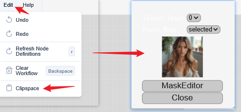
然后 MaskEditor 可以打开蒙版编辑, 对图像进行处理:
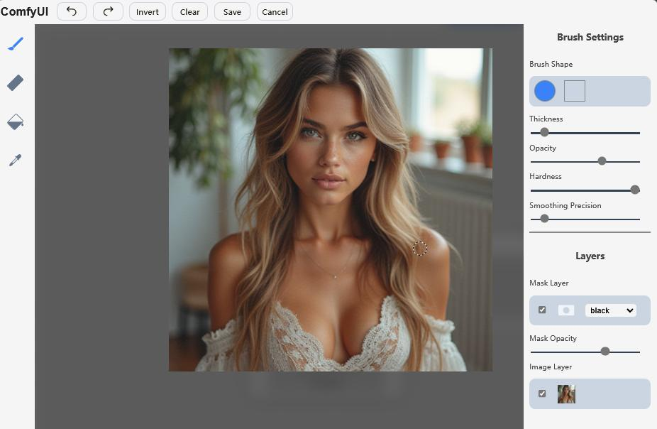
- Paste (Clipspace): 粘贴 Clipspace, 将图像复制到另一个节点 (例如加载图像节点, 如果已经蒙版处理过, 直接粘贴的是处理过的图像)
- Convert Widget to Input: 将小组件转换为输入, 例如 CLIP 文本编码节点执行这个操作之后, 提示词就不能输入了, 只能从其他节点传进来 (可以用同样的操作转换回来):
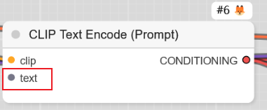
- Clone: 克隆节点, 相当于复制一个节点
- Remove: 删除节点
蒙版编辑器
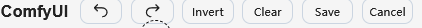
分别是 撤销, 重做, 反转, 清除, 保存, 关闭蒙版编辑
- 笔刷设置
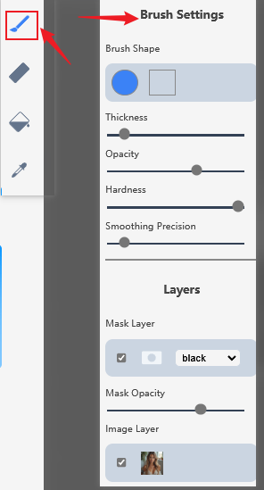
可以设置笔刷的形状, 粗细, 透明度, 硬度, 平滑系数, 遮罩层的颜色, 遮罩透明度, 选择图层. (笔刷下面的是橡皮擦, 就不介绍了).
- 喷漆设置
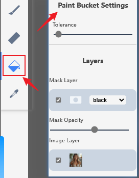
- 取色笔设置
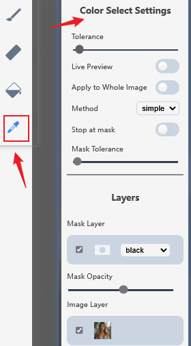
组节点
选中多个节点, 右击可以选中转换为组节点:
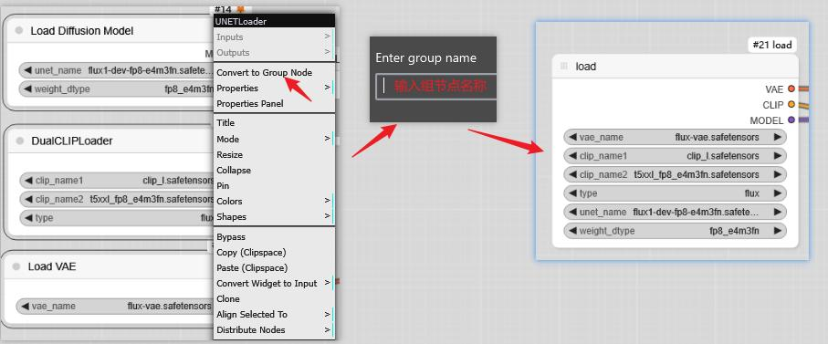
组节点可以同样的操作展开为单节点, 组节点还可以进行管理, 右击组节点:
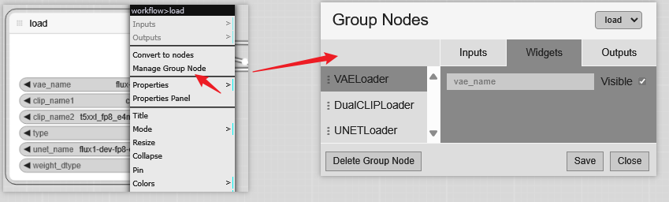
节点分组
选中多个节点, Ctrl + g 将节点分为一个组:
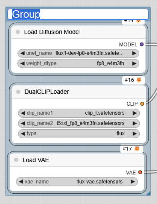
一个组的节点, 拖动组边框, 将拖动全部组内节点, 右击组边框:
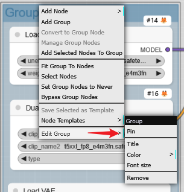
可以让边框适应节点, 选中组内全部节点, 禁用组内全部节点, 绕过组内全部节点, 编辑组 (固定, 设置标题, 颜色, 标题字体大小, 移除组, 不会移除节点)
快捷键附录
| Keybind | Explanation |
|---|---|
| Ctrl + Enter | Queue up current graph for generation 当前工作流执行生成 |
| Ctrl + Shift + Enter | Queue up current graph as first for generation 将当前工作流排到第一, 如果当前执行队列为空, 则直接执行生成 |
| Ctrl + Alt + Enter | Cancel current generation 终止当前生成 |
| Ctrl + Z/Ctrl + Y | Undo/Redo 撤销/重做 |
| Ctrl + S | Save workflow 保存工作流 |
| Ctrl + O | Load workflow 从文件夹中加载已有工作流 |
| Ctrl + A | Select all nodes 选中所有节点 |
| Alt + C | Collapse/uncollapse selected nodes 折叠/展开所选节点 |
| Ctrl + M | Mute/unmute selected nodes 禁用/解禁所选节点 |
| Ctrl + B | Bypass selected nodes 绕过所选节点, 就像节点不存在, 直接绕过执行 |
| Delete/Backspace | Delete selected nodes 删除所选节点 |
| Ctrl + Backspace | Delete the current graph 删除当前工作流 |
| Space | Move the canvas around when held and moving the cursor 按住鼠标可空格键, 拖动工作流画布 |
| Ctrl/Shift + Click | Add clicked node to selection 点击选中多个节点 |
| Ctrl + C/Ctrl + V | Copy and paste selected nodes 没有连接线复制/粘贴所选节 |
| Ctrl + C/Ctrl + Shift + V | Copy and paste selected nodes 保持连接线复制/粘贴所选节点 |
| Shift + Drag | Move multiple selected nodes at the same time 同时移动选中的所有节点 |
| Ctrl + D | Load default graph 加载默认工作流 |
| Alt + + | Canvas Zoom in 放大工作流画布 |
| Alt + - | Canvas Zoom out 缩小工作流画布 |
| Ctrl + Shift + LMB + Vertical drag | Canvas Zoom in/out 缩/放工作流画布 |
| P | Pin/Unpin selected nodes 锁定/解锁所选节点 |
| Ctrl + G | Group selected nodes 将所选节点分组 |
| Q | Toggle visibility of the queue 查看队列执行历史 |
| H | Toggle visibility of history 切换历史记录的可见性 |
| R | Refresh graph 刷新工作流 |
| Double-Click LMB | Open node quick search palette 打开节点快速搜索对话框 |
| Shift + Drag | Move multiple wires at once 点击连接点/线, 然后拖动去找新的连接点 |
| Ctrl + Alt + LMB | Disconnect all wires from clicked slot 点击连接点, 断开所有线 |
| Alt + 拖动任意一个节点 | 复制一个拖动的节点 |
| 滚动鼠标中键 | 缩放画布 |
| 鼠标左键按住空白处拖动 | 移动整个工作流 |